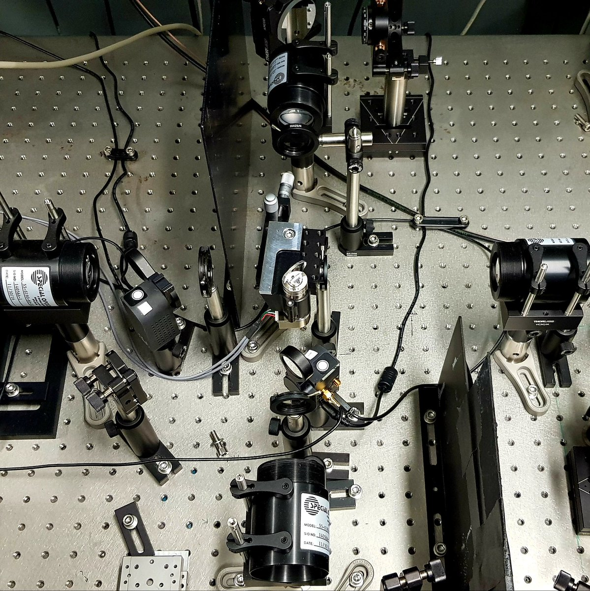

High-throughput super-resolution
Making super-resolution microscopy fast and uniform enough to image hundreds of cells, or thousands of tiny structures, in a single session.

The problem
Super-resolution microscopy is now an established tool in biology, but throughput is still a bottleneck. Quantitative biology needs large datasets. Many super-resolution setups have small fields of view and uneven illumination, so a cell near the edge of the image is not measured the same way as one in the centre.
Approach
We developed multifocal flat illumination for field-independent imaging (mfFIFI) and integrated it into an instant structured illumination microscope (iSIM). This extends the field of view beyond 100 × 100 µm while keeping fast, multicolour, volumetric imaging at twice the diffraction-limited resolution. Stitching neighbouring fields extends coverage further, enabling live-cell super-resolution imaging of dozens of cells.
A companion study characterised and compared optical flat-fielding systems (refractive field-mapping beam shapers and a Köhler integrator) for widefield and multifocal illumination, to help others choose the right solution.
What it enables
Combining the flat-fielded iSIM with ultrastructure expansion microscopy, we collected 3D images of hundreds of centrioles in human cells, or thousands of purified Chlamydomonas reinhardtii centrioles, per hour, at an effective resolution of about 35 nm. Classifying and averaging these particles let us map post-translational modifications of centriolar microtubules in 3D and reveal differences in their coverage and positioning.
Key papers
- Homogeneous multifocal excitation for high-throughput super-resolution imaging
- Characterization of flat-fielding systems for quantitative microscopy
- Strategies for increasing the throughput of super-resolution microscopies